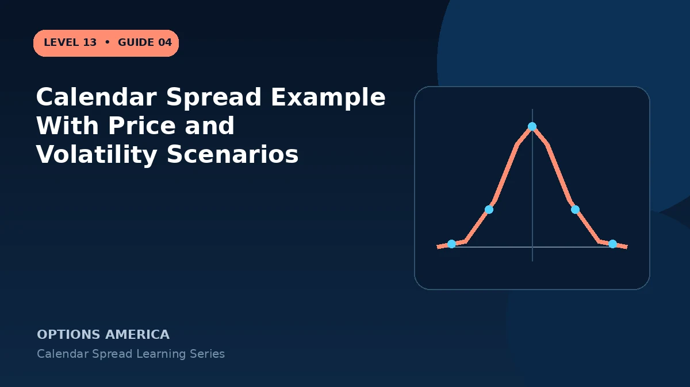

Walk through a call calendar under target, downside, upside and implied-volatility scenarios before the front option expires.
Set up the example
Stock trades at $100. Sell a 30-day 100 call for $2.20 and buy a 60-day 100 call for $3.90. Net debit and initial risk budget are $1.70, or $170 per standard spread.
Price stays near $100
As the first expiration approaches, the short call can shed extrinsic value faster. If back-month IV remains stable, the long call may retain enough value for the spread to appreciate.
Price moves away
A fast move to $90 or $110 can reduce the relative time-value advantage around the strike. Delta and gamma change, and the short option may become deeply ITM on the upside.
Volatility changes
A back-month IV rise can support the long option; a broad volatility contraction can reduce the calendar even when price is near target. Front and back IV may not move equally.
A practical example
After 20 days, stock is $101, the short call is $1.55 and the back call is $3.80. Closing for $2.25 produces about $55 profit over the original $1.70 debit before costs.
This simplified example uses selected price, time and volatility assumptions; live results will differ. Live option prices also reflect the underlying price, time decay, rates, dividends, liquidity and transaction costs. Greeks are theoretical estimates, not guarantees.
Frequently asked questions
Why is the result not the front option's decay alone?
The back option also reprices.
What if stock jumps?
Directional and assignment risk can dominate theta.
Can the spread be closed early?
Yes, by closing both expirations together.
Continue the Calendar Spreads cluster
Explore related guides: How to Choose a Calendar Spread Strike · Calendar Spread vs Vertical Spread · How to Adjust a Calendar Spread. For a structured sequence, use the free Level 13 – Calendar Spreads course.
Options involve risk and are not suitable for every investor. This material is educational and is not investment, tax or legal advice. Greeks are theoretical estimates, and contract terms and broker requirements can vary.